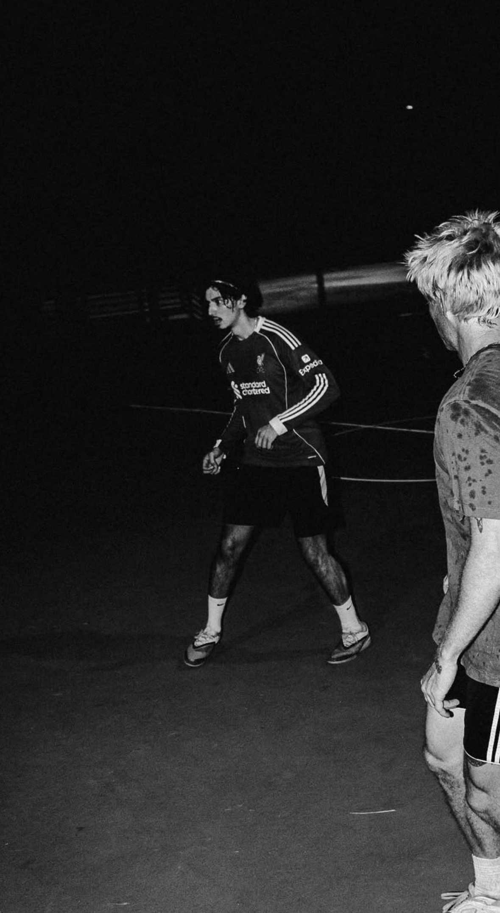
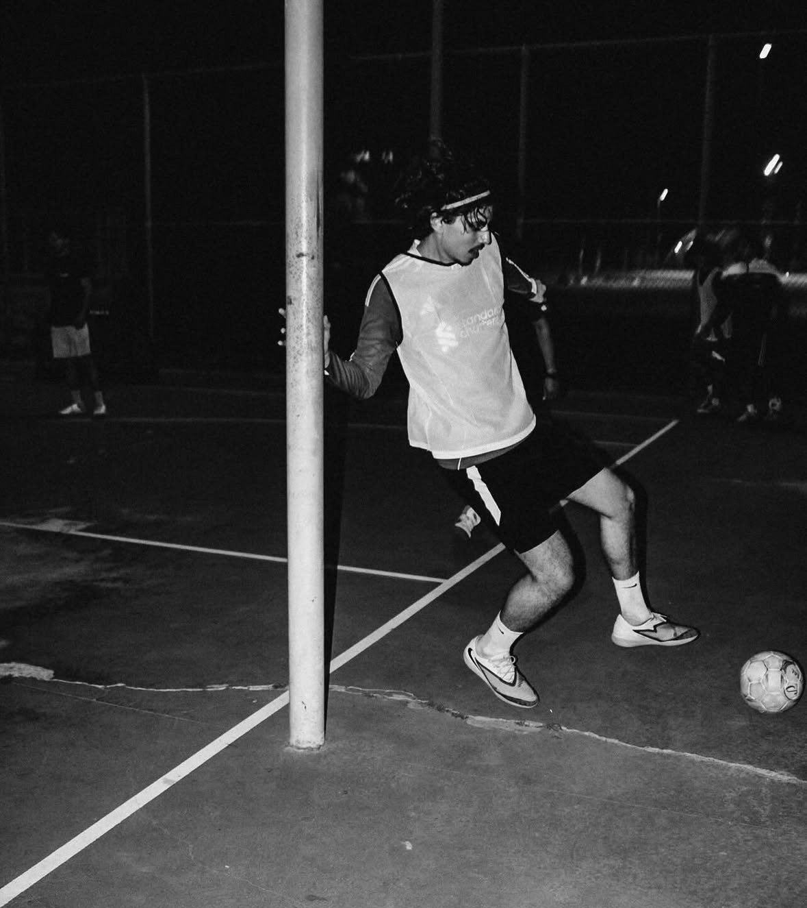

03 : About me
Hello, I’m Chris — Applied Mathematician & Data Analyst
I’m an Applied Mathematics graduate from UC Santa Barbara with a focus on data analytics, machine learning, and building data-driven systems. My work centers on transforming messy, real-world data into structured insights through modeling, analysis, and visualization.
During my internship at the Naval Surface Warfare Center (NSWC Corona), I worked with complex lifecycle datasets, developing Python data-cleaning pipelines and Tableau dashboards to support data-driven decision-making in engineering environments.
I’m particularly interested in problems involving uncertain and time-dependent data, where statistical modeling and data analysis can uncover meaningful patterns. I enjoy working across the full data pipeline — from cleaning and exploration to modeling and visualization.
I’ve also developed projects in areas such as sports analytics, machine learning, and interactive data tools, including an AI-powered analytics platform that placed 2nd in the Microsoft Innovation Challenge Hackathon.
Technical Focus
- Data cleaning and preprocessing of real-world datasets
- Statistical modeling and machine learning
- Data visualization and dashboard development
- Building end-to-end data analysis workflows
Quick Facts
- B.S. in Applied Mathematics, UC Santa Barbara (2025)
- I will be returning to graduate school in Fall 2026 for my MS in Statistics
- Interests: Data Science, Soccer, and Avatar the Last Airbender
- Tools: Python, R, SQL, Tableau, Microsoft Azure
Outside of Data
Soccer • Liverpool FC • Avatar: The Last Airbender

